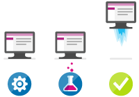

Websites and apps
The Web Apps feature in Azure App Service lets developers rapidly build, deploy, and manage powerful websites and web apps. Build standards-based web apps and APIs using .NET, Node.js, PHP, Python, and Java. Deliver both web and mobile apps for employees or customers using a single back end. Securely deliver APIs that enable additional apps and devices.
Watch a video »
Familiar and fast
Use your existing skills to code in your favorite language and IDE to build APIs and apps faster than ever. Access a rich gallery of pre-built APIs that make connecting to cloud services like Office 365 and Salesforce.com easy. Use templates to automate common workflows and accelerate your development. Experience unparalleled developer productivity with continuous integration using Visual Studio Team Services, Github, and live-site debugging.
View details »
Enterprise grade
App Service is designed for building and hosting secure mission-critical applications. Build Azure Active Directory-integrated business apps that connect securely to on-premises resources, then host them on a secure cloud platform that's compliant with ISO information security standard, SOC2 accounting standards, and PCI security standards. Automatically back up and restore your apps, all while enjoying enterprise-level SLAs.
View details »
Global scale
App Service provides availability and automatic scale on a global datacenter infrastructure. Easily scale applications up or down on demand, and get high availability within and across different geographical regions. Replicating data and hosting services in multiple locations is quick and easy, making expansion into new regions and geographies as simple as a mouse click.
View details »

Optimized for DevOps
Focus on rapidly improving your apps without ever worrying about infrastructure. Deploy app updates with built-in staging, roll-back, testing-in-production, and performance testing capabilities. Achieve high availability with geo-distributed deployments. Monitor all aspects of your apps in real-time and historically with detailed operational logs. Never worry about maintaining or patching your infrastructure again.
View details »